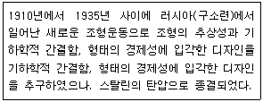
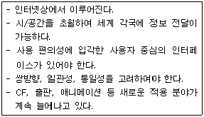
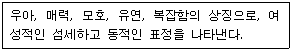
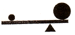
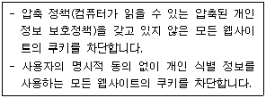
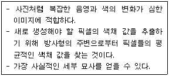

웹디자인기능사 (2009-09-27 기출문제)
1과목: 디자인 일반
1. 다음 중 커뮤니케이션 디자인의 설명으로 틀린 것은?
- 라틴어 ‘Communicare'를 어원으로 한다.
- 두 개 이상의 개체가 기호를 매개로 무언가를 공유하는 것이다.
- 운동과 시선을 중시하는 디자인이다.
- 사람과 사람사이에 기호에 의해서 의미를 전달하는 과정이다.
(정답률: 88%)

2. 망막에서 일어나는 변화에 관계없이 그 사물에 대해 지속적으로 고정적인 인식을 하고 있는 현상은?
- 운동시
- 형태시
- 항상성
- 지각성
(정답률: 73%)
3. 빅터 파파넥(Papanek victor)이 주장한 디자인의 복합 기능에 포함되지 않는 것은?
- 방법
- 연상
- 효과
- 미학
(정답률: 48%)
4. 다음 설명에 해당하는 조형운동이자 사회운동은?

- 기능주의
- 구성주의
- 역사주의
- 미래주의
(정답률: 78%)
5. 다음 설명들과 관계있는 디자인은?

- 제품 디자인
- 그린 디자인
- 웹 디자인
- 금속 디자인
(정답률: 94%)
6. 게슈탈트(Gestalt)의 형태에 관한 시각 기본 법칙에 해당되지 않는 것은?
- 통일
- 근접
- 유사
- 연속
(정답률: 68%)
7. 오스트발트(Ostwald)색상환은 무채색 축을 중심으로 몇 색상이 배열되어 있는가?
- 9
- 10
- 11
- 24
(정답률: 71%)
8. 디자인의 원리에서 율동에 해당되는 것은?
- 유사, 대비
- 대칭, 비례
- 통일, 변화
- 점이, 반복
(정답률: 85%)
9. 색의 주목성에 관한 설명으로 틀린 것은?
- 명시성이 높은 색은 주목성도 높아지게 된다.
- 주목성은 색이 우리의 시선을 끄는 힘을 말한다.
- 차가운 한색은 따뜻한 난색보다 주목성이 높다.
- 명도와 채도가 높은 색은 주목성이 높다.
(정답률: 89%)
10. 망막에 다른 색광이 자극하여 혼합되는 현상으로 색 점이 서로 가깝게 있어 명도와 채도가 떨어지지 않는 혼합방식은?
- 보색혼합
- 병치혼합
- 가산혼합
- 감산혼합
(정답률: 68%)
11. 다음 설명과 같은 특성을 가지는 선은?

- 직선
- 절선
- 점선
- 곡선
(정답률: 95%)
12. 디자인 원리 중 서로 다른 부분의 조합에 의해 생기는 것으로 시각적 힘의 강약에 의한 형의 감정효과를 주는 것은?
- 대비
- 변칙
- 통일
- 반복
(정답률: 69%)
13. 다음 중 웹 디자인에 관한 설명과 거리가 먼 것은?
- 웹페이지를 디자인하고 제작하는 것을 의미한다.
- 웹디자인은 개인용 홈페이지 외 기업용, 상업용 등 매우 다양하다
- 웹디자인은 웹과 디자인이라는 두 가지 개념이 결합된 것이다.
- 기업, 단체, 행사의 특징과 성격에 맞는 시각적 상징물을 말한다.
(정답률: 87%)
14. 흰색의 바탕 위에서 빨강색을 20초 정도 보고난 후, 빨강색을 치우면 앞에서 본 빨강색과 동일한 크기의 청록색이 나타나 보이는 현상은?
- 보색잔상
- 망막의 피로
- 계시대비
- 동시대비
(정답률: 77%)
15. 다음 중 기계적 질감에 해당되지 않는 것은?
- 사진의 망점
- 인쇄상의 스크린 톤
- 나뭇잎
- 텔레비전 주사선
(정답률: 93%)
16. 색체 조화의 공통원리에 관한 설명으로 틀린 것은?
- 질서의 원리 - 색채조화는 의식할 수 있으며 효과적인 반응을 일으키는 질서 있는 계획에 따라 선택된 색채들에서 생긴다.
- 비모호성의 원리 - 색채조화는 두 색 이상의 배색에 있어서 모호함이 없는 명료한 배색에서만 얻어진다.
- 동류의 원리 - 가장 가까운 색채끼리의 배색은 보는 사람에게 친근감을 주며 조화를 느끼게 한다.
- 대비의 원리 - 배색된 색채들이 서로 공통되는 상태와 속성을 가질 때 그 색채는 조화 된다.
(정답률: 76%)
17. 배색에 대한 설명으로 틀린 것은?
- 사물의 성능이나 기능에 부합되는 배색을 하여 주변과 어울릴 수 있도록 한다.
- 사용자 성별, 연령을 고려하여 편안한 느낌을 가질 수 있도록 한다.
- 색의 이미지를 통해서 전달하려는 목적이나 기능을 기준으로 배색한다.
- 목적에 관계없이 아름다움을 우선으로 하고 타 제품에 비해 눈에 띄는 색으로 배색하여야 한다.
(정답률: 90%)
18. 다음 두 개의 꽃 모양 중심에 있는 원의 실제 크기는 동일하다. 그런데 왼쪽의 원이 오른쪽보다 커 보이는 현상은?
- 주변과의 대비에 의한 착시현상
- 반복원리에 의한 착시현상
- 폐쇄원리에 의한 착시현상
- 연속원리에 의한 착시현상
(정답률: 93%)
19. 다음과 같은 형상이 나타내는 디자인 원리는?

- 조화
- 강조
- 율동
- 비대칭
(정답률: 88%)
20. 굿 디자인(Good Design)의 조건으로 옳은 것은?
- 합목적성, 실용성, 경제성, 효용성
- 합목적성, 심미성, 모방성, 경제성
- 합목적성, 경제성, 심미성, 독창성
- 합목적성, 심미성, 질서성, 독창성
(정답률: 85%)
2과목: 인터넷 일반
21. 웹페이지에서 특정한 문장을 가장 큰 글씨로 화면에 출력하고자 할 때 사용되는 HTML 태그는?
- <H1>
- <H3>
- <H5>
- <H6>
(정답률: 79%)
22. 비대칭 디지털 가입자 회선인 ADSL에 대한 설명으로 틀린 것은?
- Asymmetric Digital Subscriber Line의 약자로 미국 ‘발코어’사에서 개발한 기술이다.
- 고속 데이터 통신과 일반 전화를 동시에 이용할 수 있지만 데이터통신 속도가 절반으로 떨어지게 된다.
- ADSL은 가입자와 전화국간의 데이터 교환 속도가 서로 다르다.
- 하나의 회선으로 데이터 통신과 일반 전화의 이용이 가능하다.
(정답률: 66%)
23. 웹에서 하이퍼텍스트 문서 전송을 위한 통신 규약은?
- HTTP
- TELNET
- USENET
- FTP
(정답률: 73%)
24. 다음 중 인터넷 쇼핑몰의 특징으로 볼 수 없는 것은?
- 언제 어디서든 쇼핑몰의 이용이 가능하다.
- 구매자와 판매자간의 신뢰를 구축하는 것이 중요하다.
- 고객의 취향을 파악하여 정확한 Target 마케팅이 가능하다.
- 인터넷 쇼핑몰의 활성화는 지역사회를 활성화 시키는 계기가 된다.
(정답률: 87%)
25. 컴퓨터통신을 하기 위하여 서로 간에 미리 정의된 약속은?
- 접속(Connection)
- 레이어(layer)
- 프로토콜(Protocol)
- 브라우저(browser)
(정답률: 87%)
26. 검색엔진과 그에 해당된 서비스가 틀리게 연결된 것은?
- 야후 - 거기
- 옥션 - 메일 및 메신저
- 네이버 - 지식검색
- 네이트 - 보는 검색 체험하기
(정답률: 85%)
27. Java 스크립트 언어에 대한 설명으로 틀린 것은?
- Java 스크립트 언어에서 변수명은 숫자 및 특수 문자로 시작할 수 없다.
- Java 스크립트 언어는 HTML과 웹 브라우저와는 상호작용 할 수 있지만, VRML과 같은 인터넷 자원과는 상호작용 할 수 없다.
- Java 스크립트 언어는 대소문자를 구분한다.
- 함수 eval()는 Java 스크립트의 내장함수이다.
(정답률: 72%)
28. 스팸메일(spam mail)에 대한 설명으로 옳은 것은?
- 수신자의 허가 하에 전달되는 전자 우편을 말한다.
- 사용자 그룹의 구성원을 가리키는 수단으로 사용되는 대체명이다.
- 불특정 다수의 사람에게 일방적으로 전달되는 대량의 광고성 전자우편을 말한다.
- 어떤 그룹에 소속된 사람들에게 정기적으로 메시지를 보내는 전자우편을 말한다.
(정답률: 93%)
29. HTML을 이용한 웹페이지 제작에 대한 설명으로 틀린 것은?
- Markup 태그를 이용하여 제작한다.
- 다양한 멀티미디어 포맷의 파일을 연결시킬 수 있다.
- 하나의 그림에는 하나의 문서나 사이트만 연결할 수 있다.
- 위지윅(WYSLWYG)방식은 직접 코드를 입력하지 않아도 웹페이지구성이 가능하다.
(정답률: 67%)
30. HTML태그의 특징에 대해 올바르게 설명한 것은?
- 여는 태그는 있으나 닫는 태그는 없다.
- 대소문자 구별을 명확히 해야 한다.
- 들여쓰기가 가능하며 웹브라우저에 들여쓰기가 적용된다.
- 태그 안에 속성을 정의할 수 있다.
(정답률: 69%)
31. 미디어 데이터를 처리하고 재생함으로서 웹브라우저의 기능을 확장시켜 주는 것은?
- 쿠키
- 플러그인
- 책갈피
- 다이어그램
(정답률: 80%)
32. 별도의 Plug-In 프로그램이 없어도 웹브라우저에서 재생 가능한 것은?
- MOV 파일
- PDF 문서
- VRML 파일
- XML 문서
(정답률: 64%)
33. IP 주소를 대신하여 쉽게 기억할 수 있고, 이용하기 쉽도록 만든 것은?
- 파일이름
- 도메인 이름
- 주소 클래스
- 패킷
(정답률: 88%)
34. 웹 페이지 검색 방식에 대한 설명으로 틀린 것은?
- 주제별 검색 방식은 웹 페이지를 주제별로 정리하여 디렉토리 형태로 제공한다.
- 포탈(Portal)검색 방식은 웹 페이지를 방문하여 읽어 온 모든 내용을 인덱스 형태로 제공한다.
- 키워드(Keyword)검색은 사용자가 찾고자 하는 정보의 단어를 입력하여 찾는 방식이다.
- 메타(meta)검색은 여러 검색 엔진에서 정보를 찾고 난후, 결과를 통합하는 방식이다.
(정답률: 61%)
35. 인터넷 익스플로러 6.0에서 다음과 같이 개인정보 설정을 하고자 한다. 선택해야 할 보안 수준으로 옳은 것은?

- 높음
- 보통 높음
- 보통
- 낮음
(정답률: 82%)
36. 관련성 있는 페이지 사이를 자유롭게 이동할 수 있는 구조를 가진 컴퓨터상이 문서는?
- 워드문서
- 하이퍼텍스트
- 그림문서
- 자바스크립트
(정답률: 79%)
37. 일반적으로 드림위버에서 웹문서에 자바스크립트 소스를 삽입하여 인터렉티브한 페이지를 만들 수 있도록 제공해 주는 것은?
- Layer
- Behaviors
- Form
- CSS
(정답률: 48%)
38. 다음 중 웹 브라우저의 종류가 아닌 것은?
- 넷스케이프
- 익스플로러
- 모자이크
- 드림위버
(정답률: 75%)
39. 인터넷 서비스 중 원격의 컴퓨터를 인터넷으로 접속하여 마치 자신의 컴퓨터처럼 사용할 수 있도록 해주는 것은?
- FTP
- TELNET
- www
(정답률: 78%)
40. 웹 페이지를 제작할 때 사용하는 웹에디터의 종류가 아닌 것은?
- ActiveX
- Notepad
- UltraEdit
- Dreamweaver
(정답률: 71%)
3과목: 웹그래픽스 디자인
41. 다음 중 Illustrator9.0에서 원하는 각도를 입력해 선택한 오브젝트(Object)를 기울여 주는 메뉴는?
- Move
- Scale
- Rotate
- Shear
(정답률: 45%)
42. 다음 중 웹 디자인 프로세스(Process)를 순차적으로 옳게 나열한 것은?
- 주제선정 → 자료수집 → 콘티 및 스토리보드 제작 → 레이아웃 구성 → 그래픽 작업 및 기술적 요소구현 → 결과물 수정 보완 → 서버에 자료 업로드 → 검색엔진 등록
- 주제선정 → 자료수집 → 레이아웃구성 → 콘티 및 스토리보드 제작→그래픽작업 및 기술적 요소구현 → 결과물 수정 보완 → 검색엔진 등록→서버에 자료 업로드
- 자료수집 → 주제선정 → 콘티 및 스토리보드 제작 → 레이아웃구성 → 그래픽 작업 및 기술적 요소 구현 → 서버에 자료 업로드 → 결과물 수정 보완 → 검색엔진 등록
- 자료수집 → 주제선정 → 레이아웃 구성 →콘티 및 스토리보드 제작 →그래픽 작업 및 기술적 요소 구현 → 검색엔진 등록 → 결과물 수정 보완 → 검색엔진 등록 → 서버에 자료 업로드
(정답률: 68%)
43. 웹문서에서 텍스트나 이미지 또는 멀티미디어 요소를 클릭하면 외부의 텍스트나 이미지 또는 기타 다른 멀티미디어 요소로 변경되는 것은?
- 테이블
- 하이퍼링크
- 프레임
- 태그
(정답률: 87%)
44. 플래시MX에서 문자를 이용하여 버튼을 만들 경우 글자와 글자 사이의 공백부분에서 마우스가 위치했을 때 버튼이 작동하도록 만드는 방법으로 가장 옳은 것은?
- 스테이지에서 사각형의 그래픽심벌을 만들어 버튼 심벌 밑에 놓는다.
- 문자를 그래픽 심벌로 만들어서 버튼 심벌을 만든다.
- 버튼 심벌의 히트(Hit)영역에 사각형을 그려준다.
- 버튼 심벌에서 레이어를 추가한다.
(정답률: 57%)
45. 다음 중 GIF 파일 포맷의 설명으로 틀린 것은?
- 이미지의 일부분을 투명하게 만들 수 있다.
- 1670만 가지의 색상을 인덱스 색상으로 사용할 수 있다.
- 애니메이션 효과를 만들 수 있다.
- 이미지가 점진적으로 나타나는 Interlace 효과를 낼 수 있다.
(정답률: 70%)
46. 애니메이션 도구인 플래시(FLASH)가 가지고 있는 특징이 아닌 것은?
- 파일 크기가 비교적 작으면서 좋은 품질의 무비를 만들어 준다.
- 비트맵 형식이기 때문에 고품질 이미지 제작이 가능하다.
- 사운드 및 다양한 파일 포맷을 지원한다.
- 웹브라우저에서 자체적으로 플래시 무비가 실행된다.
(정답률: 65%)
47. 다음과 같은 설명에 해당되는 리샘플링 알고리즘은?

- Bilinear
- Bicubic
- Resolution
- Nearest Neighbor
(정답률: 51%)
48. 컴퓨터그래픽스 시스템의 입력 장치가 아닌 것은?
- 키보드
- 마우스
- 플로터
- 스캐너
(정답률: 85%)
49. 벡터 이미지에 대한 설명으로 틀린 것은?
- 수학적으로 행렬을 사용하여 좌표변환을 통해 정의된 선과 곡선으로 구성되어 있다.
- 그래픽의 품질을 그대로 유지하면서 선의 색상, 이동, 크기를 변경할 수 있다.
- 해상도에 영향을 받지 않는다.
- 전문 용어로 래스터 이미지라 한다.
(정답률: 62%)
50. 웹페이지에서 사용되는 버튼을 가장 부적절하게 제작한 것은?
- 문자 버튼의 색상과 배경이 변한다.
- 애니메이션 효과로 움직이는 버튼을 제작한다.
- 모든 버튼이 자연스럽게 사라진다.
- 흔들리는 이미지가 메뉴로 바뀐다.
(정답률: 77%)
51. 3차원 컴퓨터 그래픽의 모델링 방식 중 물체의 면과 면이 만나서 구성되는 모서리 선을 사용하여 물체의 형상을 표현하는 방식으로 점, 꼭짓점을 연결하는 선 또는 곡선만으로 표현하는 방식은?
- 와이어프레임(Wire Frame)모델링 방식
- 솔리드(Solid)모델링 방식
- CSG(constructive Solid Geometry)모델링 방식
- B-Reps(Boundary Representation)모델링 방식
(정답률: 79%)
52. 웹디자인 프로세스 중 Pre-Production 단계에 해당되지 않는 것은?
- 이미지 제작
- 디자인 계획 수립
- 컨셉 구상
- 디자인 구체화
(정답률: 63%)
53. 사용자가 그래픽을 통해 컴퓨터와 정보를 교환하는 작업 환경을 의미하는 것은?
- AVI(Audio Video Interface)
- PUI(Process User Interface)
- GUI(Graphic User Interface)
- MUI(Multi User Interface)
(정답률: 83%)
54. 다음 중 PNG 파일 포맷의 성명으로 틀린 것은?
- 압축 기법을 사용하지 않는 포맷으로 높은 이미지의 품질을 그대로 유지할 수 있다.
- GIF와 JPEG의 장점을 합친 포맷으로 무손실 압축을 사용한다.
- 8비트의 256컬러나, 24비트의 트루컬러를 선택하여 저장할 수 있어 효율적이다.
- 인터레이스 로딩기법과 디더링 옵션, 투명도를 지정할 수 있다.
(정답률: 52%)
55. 다음 중 웹 그래픽 제작 툴과 가장 거리가 먼 것은?
- 포토샵(Photoshop)
- 일러스트레이터(Illustrator)
- 오토캐드(Autocad)
- 페인트샵(Paintshop)
(정답률: 77%)
56. 다음 중 Flash MX에서 쉐이프트위닝을 할 때 도형이 원하지 않는 모양으로 꼬이는 현상이 발생 되는데, 이를 해결할 수 있는 기능은?
- Motion Tweening
- Shape Hint
- Expand Fill
- Break Apart
(정답률: 49%)
57. 일반적으로 “해상도가 높다”라는 말의 의미로 틀린 것은?
- 이미지가 선명하다.
- 이미지 질(Quality)이 좋다.
- 이미지의 용량이 적다.
- 일정 단위의 크기에 많은 픽셀을 포함한다.
(정답률: 92%)
58. 두 개의 서로 다른 이미지나 3차원 모델 사이의 변화하는 과정을 서서히 나타내는 것은?
- 모핑
- 로토스코핑
- 미립자 시스템
- 중첩액션
(정답률: 77%)
59. 웹페이지 제작을 도와주는 위지위그(WYSIWYG)프로그램이 아닌 것은?
- 프론트페이지(Frontpage)
- 드림위버(Dreamweaver)
- 나모(Namo Web Editor)
- 피디에프(PDF; Portable Document Format)
(정답률: 77%)
60. 웹페이지를 작성할 때 배경이미지와 메뉴에 관한 설명으로 틀린 것은?
- 스타일시트를 이용하여 배경 이미지의 반복 횟수를 증가시킨다.
- 배경 이미지가 클 경우 용량 증가로 로딩이 늦어진다.
- 메뉴는 메타포를 이용하여 디자인한다.
- 배경의 색상을 분화시켜 사용하면 프레임이 사용된 것처럼 보인다.
(정답률: 60%)